Para crear las relaciones se hacen desde las migraciones.

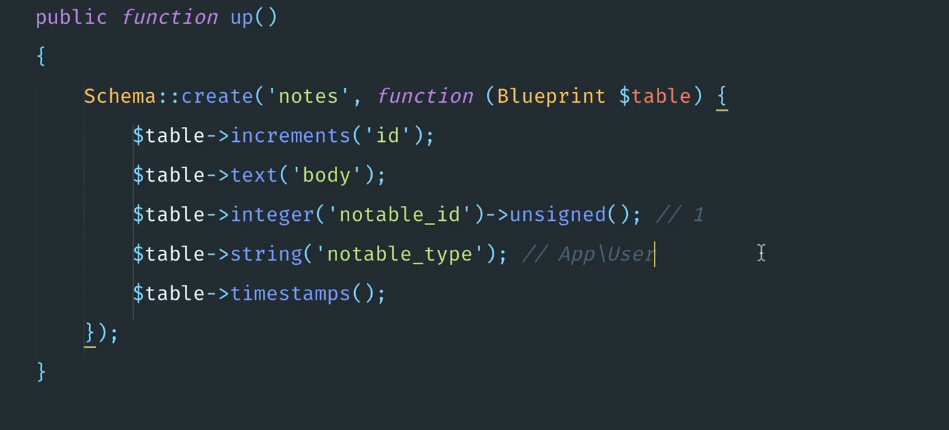

Ojo con los campos uno es para el id y el otro para el tipo.


El modelo note queda. 
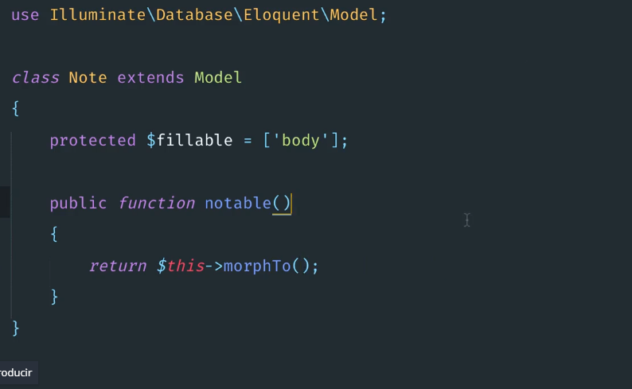

El modelo mensagge. 
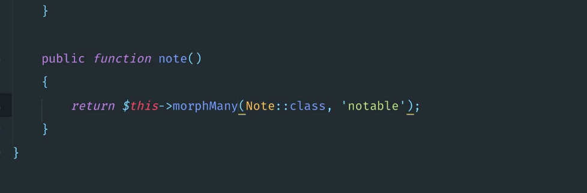 o 
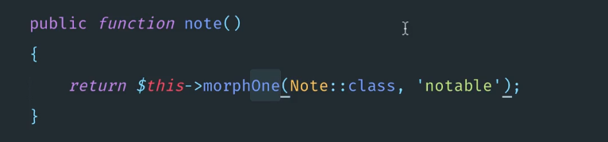

Esto se hace en cada modelo se pega  cualquiera de los de Arriba. 

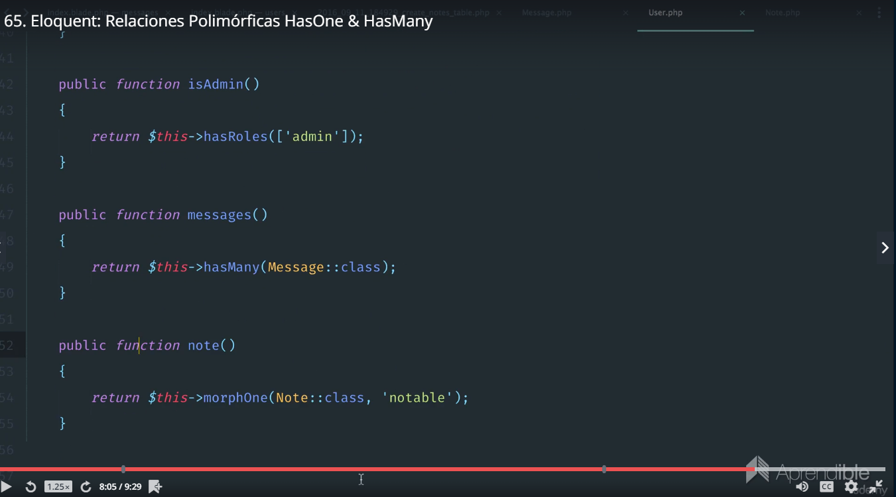

Demo desde Tinker.

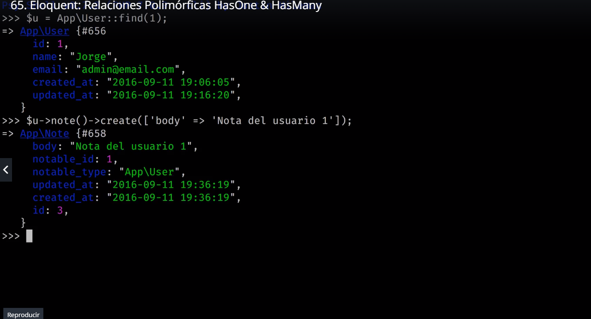

Para mostrarlo es tan simple como llamar a la relación. 

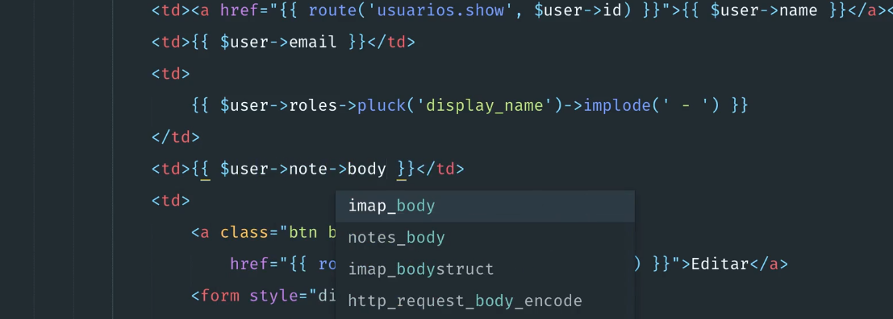

{{ $user->note->body }}


######################################
Para las de muchos a muchos. 

Comando--> php artisan make:migration create_specialty_user_table

Migración con la referencia al id de tag y lo de las relaciones polimorficas. 

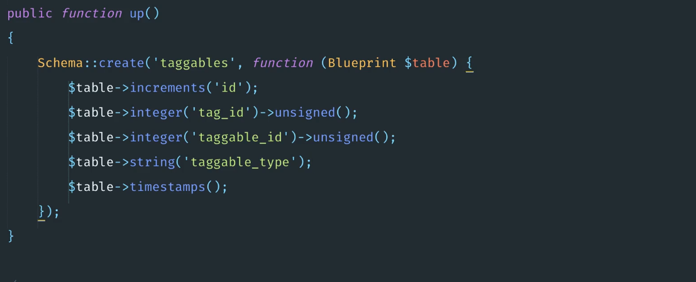

En el modelo tag se el metodo morphedByMany

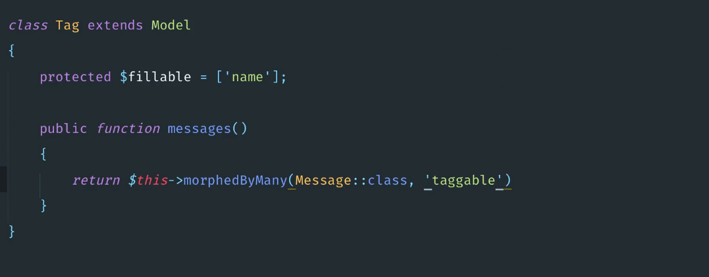

Modelo  messages. 

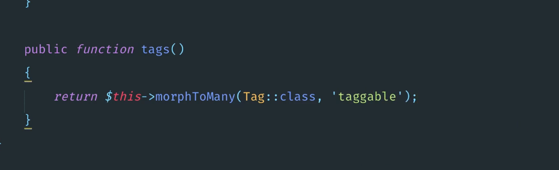

Para mostrar los resultados.

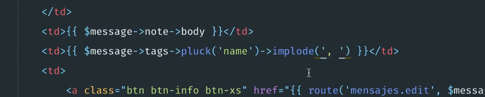

Agregar la hora a la relación. 

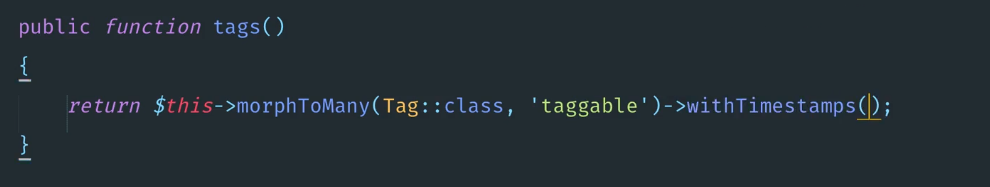


